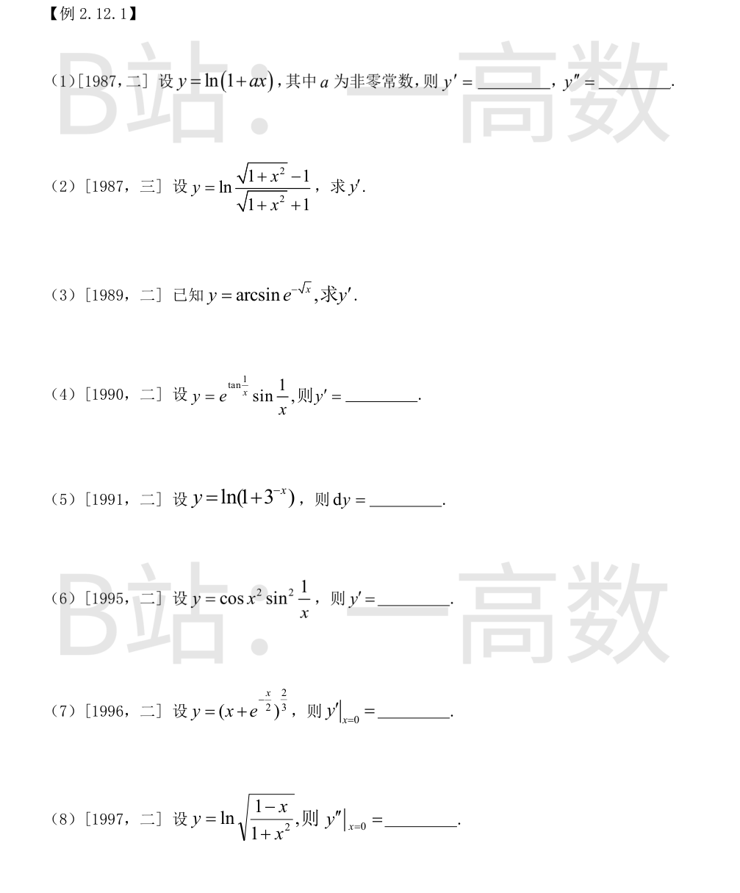
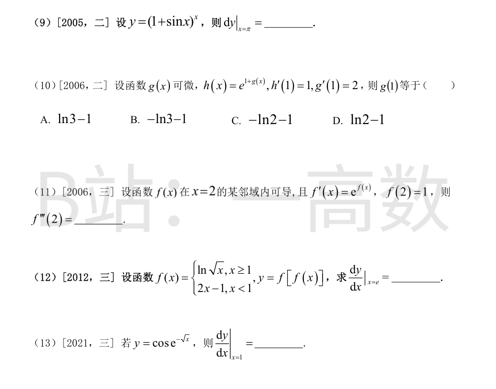
由链式法则：
$$y'=\frac{a}{1+ax}$$
再求导：
$$y''=a\cdot\left[-\frac{a}{(1+ax)^2}\right]=-\frac{a^2}{(1+ax)^2}.$$
记 $s=\sqrt{1+x^2}$，则 $y=\ln(s-1)-\ln(s+1)$。
$$y'=\frac{x/s}{s-1}-\frac{x/s}{s+1}=\frac{x}{s}\cdot\frac{2}{s^2-1}=\frac{x}{s}\cdot\frac{2}{x^2}=\frac{2}{x\sqrt{1+x^2}}.$$
由复合函数求导法则：
$$y'=\frac{1}{\sqrt{1-\left(e^{-\sqrt{x}}\right)^2}}\cdot e^{-\sqrt{x}}\cdot\left(-\frac{1}{2\sqrt{x}}\right)=-\frac{e^{-\sqrt{x}}}{2\sqrt{x}\sqrt{1-e^{-2\sqrt{x}}}}.$$
记 $u=\frac{1}{x}$，$u'=-\frac{1}{x^2}$：
$$y'=e^{\tan u}\sec^2 u\cdot u'\cdot\sin u+e^{\tan u}\cos u\cdot u'$$
$$=-\frac{1}{x^2}e^{\tan\frac{1}{x}}\left[\sec^2\frac{1}{x}\sin\frac{1}{x}+\cos\frac{1}{x}\right].$$
$$y'=\frac{-3^{-x}\ln 3}{1+3^{-x}}=-\frac{\ln 3}{3^x+1}$$
$$dy=-\frac{\ln 3}{3^x+1}\,dx.$$
乘积与复合求导：
$$y'=-\sin x^2\cdot 2x\cdot\sin^2\frac{1}{x}+\cos x^2\cdot 2\sin\frac{1}{x}\cos\frac{1}{x}\cdot\left(-\frac{1}{x^2}\right)$$
$$=-2x\sin x^2\sin^2\frac{1}{x}-\frac{1}{x^2}\cos x^2\sin\frac{2}{x}.$$
$$y'=3(x+e^{x/2})^2\left(1+\frac{1}{2}e^{x/2}\right)$$
$$y'\big|_{x=0}=3\cdot 1^2\cdot\left(1+\frac{1}{2}\right)=\frac{9}{2}.$$
$$y=\frac{1}{2}\left[\ln(1-x)-\ln(1+x^2)\right]$$
$$y'=\frac{1}{2}\left(-\frac{1}{1-x}-\frac{2x}{1+x^2}\right),\qquad y''=\frac{1}{2}\left[-\frac{1}{(1-x)^2}-\frac{2-2x^2}{(1+x^2)^2}\right]$$
$$y''\big|_{x=0}=\frac{1}{2}(-1-2)=-\frac{3}{2}.$$
取对数：$\ln y=x\ln(1+\sin x)$，
$$\frac{y'}{y}=\ln(1+\sin x)+\frac{x\cos x}{1+\sin x}$$
$x=\pi$ 时 $y=1^\pi=1$，故
$$y'(\pi)=\ln 1+\frac{\pi\cdot(-1)}{1}=-\pi$$
$$dy\big|_{x=\pi}=-\pi\,dx.$$
$$h'(x)=e^{1+g(x)}\,g'(x)$$
代入 $h'(1)=1,\ g'(1)=2$：
$$1=e^{1+g(1)}\cdot 2\ \Rightarrow\ e^{1+g(1)}=\frac{1}{2}\ \Rightarrow\ 1+g(1)=-\ln 2$$
$$g(1)=-\ln 2-1.$$ 故选 C。
$$f''(x)=e^{f(x)}f'(x)=e^{2f(x)}$$
$$f'''(x)=2e^{2f(x)}f'(x)=2e^{3f(x)}$$
$$f'''(2)=2e^{3f(2)}=2e^3.$$
$x=e\ge 1$：$f(e)=\frac{1}{2}\ln e=\frac{1}{2}<1$，故 $f\left(\frac{1}{2}\right)=2\cdot\frac{1}{2}-1=0$。
$$\frac{dy}{dx}=f'(f(x))\,f'(x)$$
代入 $x=e$：
$$\frac{dy}{dx}\bigg|_{x=e}=f'\left(\frac{1}{2}\right)\cdot f'(e)=2\cdot\frac{1}{2e}=\frac{1}{e}.$$
$$y'=-\sin e^{-\sqrt{x}}\cdot e^{-\sqrt{x}}\cdot\left(-\frac{1}{2\sqrt{x}}\right)=\frac{e^{-\sqrt{x}}\sin e^{-\sqrt{x}}}{2\sqrt{x}}$$
$$\frac{dy}{dx}\bigg|_{x=1}=\frac{e^{-1}\sin(e^{-1})}{2}=\frac{\sin(1/e)}{2e}.$$
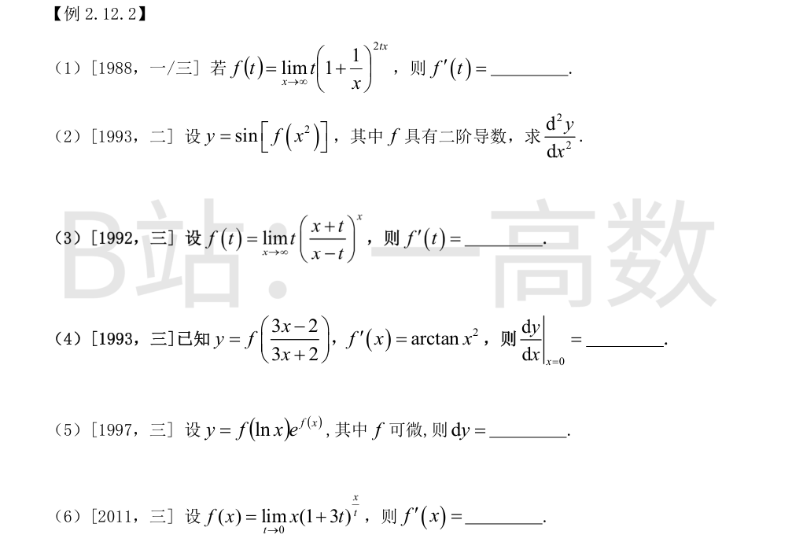
$$\left(1+\frac{1}{x}\right)^{2tx}=e^{2tx\ln(1+1/x)}\to e^{2t}\quad(x\ln(1+1/x)\to 1)$$
故 $f(t)=te^{2t}$，
$$f'(t)=e^{2t}+2te^{2t}=(1+2t)e^{2t}.$$
$$y'=2x f'(x^2)\cos[f(x^2)]$$
再求导：
$$y''=2f'(x^2)\cos[f(x^2)]+2x\cdot f''(x^2)\cdot 2x\cdot\cos[f(x^2)]+2x f'(x^2)\cdot\left(-\sin[f(x^2)]\right)\cdot 2x f'(x^2)$$
$$=2f'(x^2)\cos[f(x^2)]+4x^2f''(x^2)\cos[f(x^2)]-4x^2[f'(x^2)]^2\sin[f(x^2)].$$
$$\left(\frac{x+t}{x-t}\right)^x=\left(1+\frac{2t}{x-t}\right)^x=e^{x\ln\left(1+\frac{2t}{x-t}\right)}\to e^{2t}$$
（因 $x\cdot\frac{2t}{x-t}\to 2t$）。故 $f(t)=te^{2t}$，
$$f'(t)=e^{2t}+2te^{2t}=(1+2t)e^{2t}.$$
记 $u=\frac{3x-2}{3x+2}$，则
$$u'=\frac{3(3x+2)-3(3x-2)}{(3x+2)^2}=\frac{12}{(3x+2)^2}$$
$$\frac{dy}{dx}=f'(u)\,u'=\arctan(u^2)\cdot\frac{12}{(3x+2)^2}$$
$x=0$ 时 $u=-1$：
$$\frac{dy}{dx}\bigg|_{x=0}=\arctan 1\cdot\frac{12}{4}=\frac{\pi}{4}\cdot 3=\frac{3\pi}{4}.$$
$$y'=\frac{1}{x}f'(\ln x)\,e^{f(x)}+f(\ln x)\,e^{f(x)}f'(x)$$
$$dy=e^{f(x)}\left[\frac{f'(\ln x)}{x}+f(\ln x)f'(x)\right]dx.$$
$$\lim_{t\to 0}(1+3t)^{x/t}=e^{\lim_{t\to 0}\frac{x}{t}\ln(1+3t)}=e^{3x}$$
（$\ln(1+3t)\sim 3t$）。故 $f(x)=xe^{3x}$，
$$f'(x)=e^{3x}+3xe^{3x}=(1+3x)e^{3x}.$$
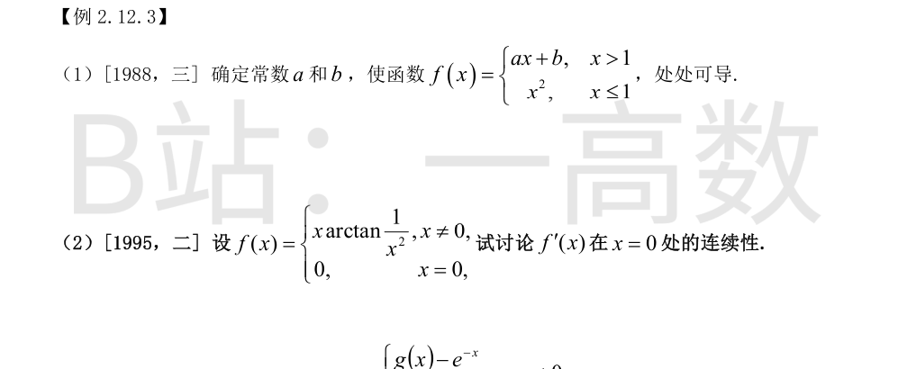
x=1 处连续要求：$a+b=f(1)=1$。
x=1 处可导要求左、右导数相等：
$$f_- '(1)=2x\big|_{x=1}=2,\qquad f_+ '(1)=a$$
故 $a=2$，代回得 $b=-1$。
此时 $f'(x)=2\ (x>1)$，$f'(x)=2x\ (x\le 1)$，$f'$ 处处连续，f 处处可导。
用定义求 $f'(0)$：
$$f'(0)=\lim_{x\to 0}\frac{x\arctan\frac{1}{x^2}-0}{x}=\lim_{x\to 0}\arctan\frac{1}{x^2}=\frac{\pi}{2}$$
$x\ne 0$ 时：
$$f'(x)=\arctan\frac{1}{x^2}+x\cdot\frac{1}{1+x^{-4}}\cdot\left(-\frac{2}{x^3}\right)=\arctan\frac{1}{x^2}-\frac{2x^2}{x^4+1}$$
$$\lim_{x\to 0}f'(x)=\frac{\pi}{2}-0=\frac{\pi}{2}=f'(0)$$
故 $f'(x)$ 在 $x=0$ 处连续。
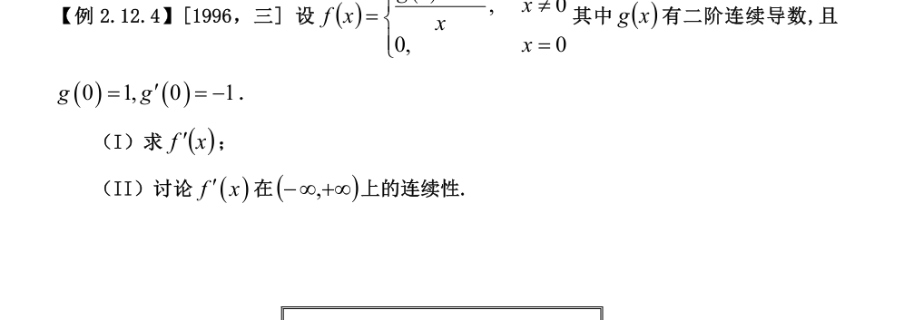
(I) $x\ne 0$ 时直接求导：
$$f'(x)=\frac{x[g'(x)+e^{-x}]-[g(x)-e^{-x}]}{x^2}.$$
x=0 处用定义。由泰勒公式（$g$ 二阶连续可导）：
$$g(x)=1-x+\frac{g''(0)}{2}x^2+o(x^2),\qquad e^{-x}=1-x+\frac{x^2}{2}+o(x^2)$$
$$g(x)-e^{-x}=\frac{g''(0)-1}{2}x^2+o(x^2)$$
$$f'(0)=\lim_{x\to 0}\frac{f(x)-f(0)}{x}=\lim_{x\to 0}\frac{g(x)-e^{-x}}{x^2}=\frac{g''(0)-1}{2}.$$
(II) $x\ne 0$ 时 $f'$ 由连续函数（$g$ 二阶连续可导）构成，连续。考察 $x\to 0$：
$$g'(x)=-1+g''(0)x+o(x)\ \Rightarrow\ g'(x)+e^{-x}=(g''(0)-1)x+o(x)$$
$$x[g'(x)+e^{-x}]=(g''(0)-1)x^2+o(x^2)$$
$$\lim_{x\to 0}f'(x)=\lim_{x\to 0}\frac{(g''(0)-1)x^2-\frac{g''(0)-1}{2}x^2+o(x^2)}{x^2}=\frac{g''(0)-1}{2}=f'(0)$$
故 $f'$ 在 $x=0$ 处也连续，从而 $f'(x)$ 在 $(-\infty,+\infty)$ 上连续。
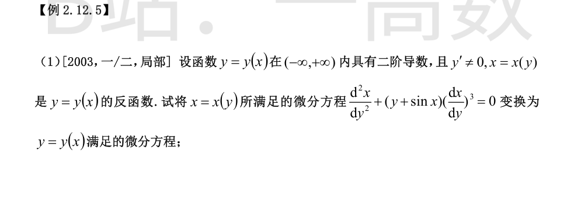
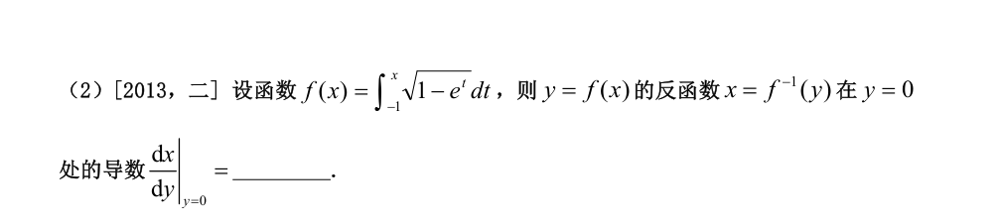
$$\frac{dx}{dy}=\frac{1}{y'}$$
$$\frac{d^2x}{dy^2}=\frac{d}{dx}\left(\frac{1}{y'}\right)\cdot\frac{dx}{dy}=-\frac{y''}{(y')^2}\cdot\frac{1}{y'}=-\frac{y''}{(y')^3}$$
代入原方程：
$$-\frac{y''}{(y')^3}+(y+\sin x)\cdot\frac{1}{(y')^3}=0$$
两边乘 $(y')^3$：
$$y''=y+\sin x.$$
$$f'(x)=\sqrt{1-e^x}$$
y=0 当且仅当 $\int_{-1}^{x}\sqrt{1-e^t}\,dt=0$，即 $x=-1$。
$$\frac{dx}{dy}=\frac{1}{f'(x)}\ \Rightarrow\ \frac{dx}{dy}\bigg|_{y=0}=\frac{1}{f'(-1)}=\frac{1}{\sqrt{1-e^{-1}}}.$$
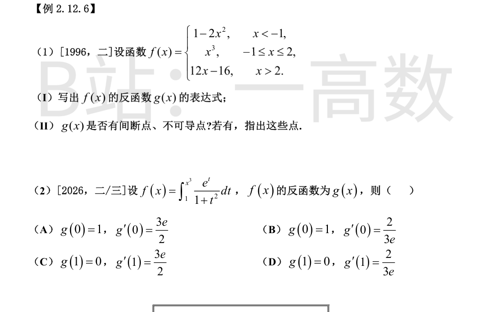
(I) 三段分别严格单调，值域为 $(-\infty,-1]$、$[-1,8]$、$(8,+\infty)$，逐一反解：
$$g(x)=\begin{cases}-\sqrt{\dfrac{1-x}{2}}, & x<-1,\\[2mm] \sqrt[3]{x}, & -1\le x\le 8,\\[2mm] \dfrac{x+16}{12}, & x>8.\end{cases}$$
(II) 在 $x=-1$ 处左右极限均为 $-1$，在 $x=8$ 处左右极限均为 $2$，故 $g$ 处处连续，无间断点。
可导性：
- $x\to(-1)^-$：$g'(x)=\frac{1}{2\sqrt{2(1-x)}}\to\frac{1}{4}$；$x\to(-1)^+$：$g'(x)=\frac{1}{3}x^{-2/3}\to\frac{1}{3}$。左右导数不等，$x=-1$ 处不可导。
- $x=0$（属 $\sqrt[3]{x}$ 段）：$\lim_{h\to 0}\frac{h^{1/3}-0}{h}=\lim_{h\to 0}h^{-2/3}=+\infty$，不可导。
- $x=8$：左导数 $\frac{1}{3}\cdot 8^{-2/3}=\frac{1}{12}$，右导数 $\frac{1}{12}$，相等，可导。
综上：$g$ 没有间断点，在 $x=-1$ 与 $x=0$ 处不可导。
$f(1)=0$，故 $g(0)=1$（排除 C、D）。
由变限积分求导：
$$f'(x)=\frac{e^{x^3}}{1+x^6}\cdot 3x^2,\qquad f'(1)=\frac{e}{2}\cdot 3=\frac{3e}{2}$$
由反函数求导法则：
$$g'(0)=\frac{1}{f'(g(0))}=\frac{1}{f'(1)}=\frac{2}{3e}$$
故选 B。
【仲裁修正】独立校验发现分歧，经仲裁重解，以本答案为准：三方数值一致且正确（f(1)=0 故 g(0)=1；f'(1)=3e/2 故 g'(0)=2/(3e)）；原题选项 (B) 恰为此组数值、(D) 为 g(1)=0, g'(1)=2/(3e)，A 把选项字母误标为 D
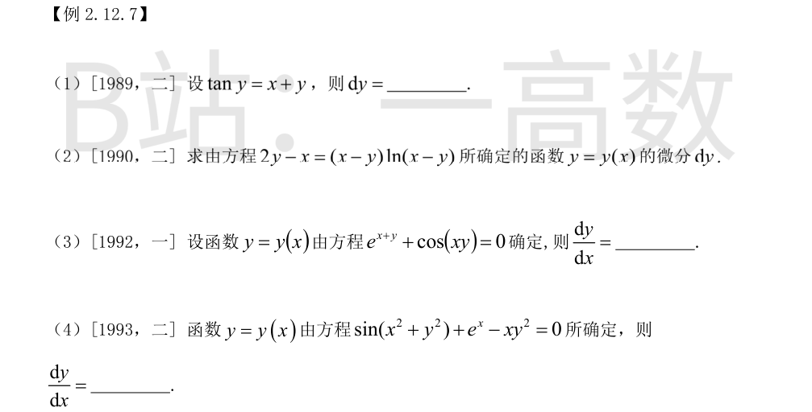
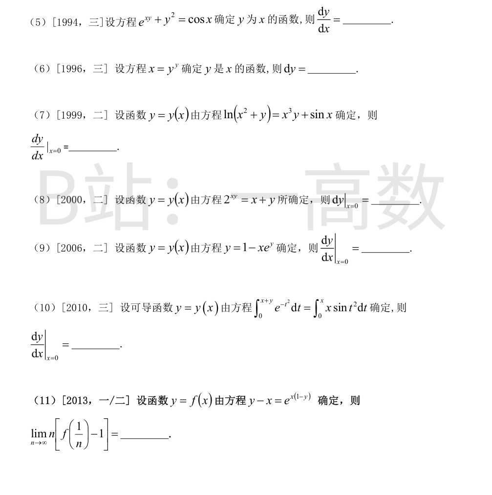
两边对 x 求导：
$$\sec^2 y\cdot y'=1+y'$$
$$y'(\sec^2 y-1)=1\ \Rightarrow\ y'\tan^2 y=1\ \Rightarrow\ y'=\cot^2 y$$
由 $\tan y=x+y$ 得 $\cot^2 y=\frac{1}{(x+y)^2}$，故
$$dy=\frac{dx}{(x+y)^2}.$$
两边对 x 求导（注意 $(x-y)'=1-y'$）：
$$2y'-1=(1-y')\ln(x-y)+(x-y)\cdot\frac{1-y'}{x-y}=(1-y')[\ln(x-y)+1]$$
$$3y'-2=(1-y')\ln(x-y)\ \Rightarrow\ y'[3+\ln(x-y)]=2+\ln(x-y)$$
$$y'=\frac{2+\ln(x-y)}{3+\ln(x-y)},\qquad dy=\frac{2+\ln(x-y)}{3+\ln(x-y)}\,dx.$$
令 $F(x,y)=e^{x+y}+\cos(xy)$：
$$F_x=e^{x+y}-y\sin(xy),\qquad F_y=e^{x+y}-x\sin(xy)$$
$$\frac{dy}{dx}=-\frac{F_x}{F_y}=-\frac{e^{x+y}-y\sin(xy)}{e^{x+y}-x\sin(xy)}$$
利用 $e^{x+y}=-\cos(xy)$ 化简：
$$\frac{dy}{dx}=-\frac{\cos(xy)+y\sin(xy)}{\cos(xy)+x\sin(xy)}.$$
令 $F=\sin(x^2+y^2)+e^x-xy^2$：
$$F_x=2x\cos(x^2+y^2)+e^x-y^2,\qquad F_y=2y\cos(x^2+y^2)-2xy$$
$$\frac{dy}{dx}=-\frac{F_x}{F_y}=\frac{y^2-e^x-2x\cos(x^2+y^2)}{2y\cos(x^2+y^2)-2xy}.$$
方程两边对 x 求导：
$$e^{xy}(y+xy')+2yy'=-\sin x$$
$$y'(xe^{xy}+2y)=-\sin x-ye^{xy}$$
$$\frac{dy}{dx}=-\frac{y e^{xy}+\sin x}{x e^{xy}+2y}.$$
取对数：$\ln x=y\ln y$，两边对 x 求导：
$$\frac{1}{x}=y'\ln y+y\cdot\frac{y'}{y}=y'(1+\ln y)$$
$$y'=\frac{1}{x(1+\ln y)},\qquad dy=\frac{dx}{x(1+\ln y)}.$$
x=0 代入方程：$\ln y=0$，得 $y(0)=1$。
两边对 x 求导：
$$\frac{2x+y'}{x^2+y}=3x^2 y+x^3 y'+\cos x$$
代入 $x=0,\ y=1$：
$$\frac{y'}{1}=1\ \Rightarrow\ y'(0)=1.$$
x=0 代入方程：$2^0=y$，得 $y(0)=1$。
两边对 x 求导：
$$2^{xy}\ln 2\cdot(y+xy')=1+y'$$
代入 $x=0,\ y=1$：
$$\ln 2=1+y'\ \Rightarrow\ y'(0)=\ln 2-1$$
$$dy\big|_{x=0}=(\ln 2-1)\,dx.$$
x=0 代入方程：$y=1$。
两边对 x 求导：
$$y'=-e^y-xe^y y'\ \Rightarrow\ y'(1+xe^y)=-e^y$$
代入 $(0,1)$：
$$y'\cdot 2=-e\ \Rightarrow\ y'(0)=-\frac{e}{2}.$$
【仲裁修正】独立校验发现分歧，经仲裁重解，以本答案为准：y'(1+xe^y)=-e^y，代入 (0,1) 得 y'(0)·2=-e，故 -e/2；A、B 漏掉因子 (1+xe^y)=2，误得 -e（solver 正确）
右端 $=x\int_0^x\sin t^2\,dt$（x 为参数提出）。
x=0 代入：$\int_0^{y(0)}e^{-t^2}dt=0$，由被积函数恒正得 $y(0)=0$。
两边对 x 求导：
$$e^{-(x+y)^2}(1+y')=\int_0^x\sin t^2\,dt+x\sin x^2$$
代入 $x=0,\ y=0$：
$$1\cdot(1+y'(0))=0\ \Rightarrow\ y'(0)=-1.$$
x=0 代入方程：$f(0)=e^0=1$。
方程两边对 x 求导：
$$y'-1=e^{x(1-y)}\left[(1-y)-xy'\right]$$
代入 $(0,1)$：$y'(0)-1=0$，即 $f'(0)=1$。
$$\lim_{n\to\infty}n\left[f\left(\frac{1}{n}\right)-1\right]=\lim_{n\to\infty}\frac{f(1/n)-f(0)}{1/n}=f'(0)=1.$$
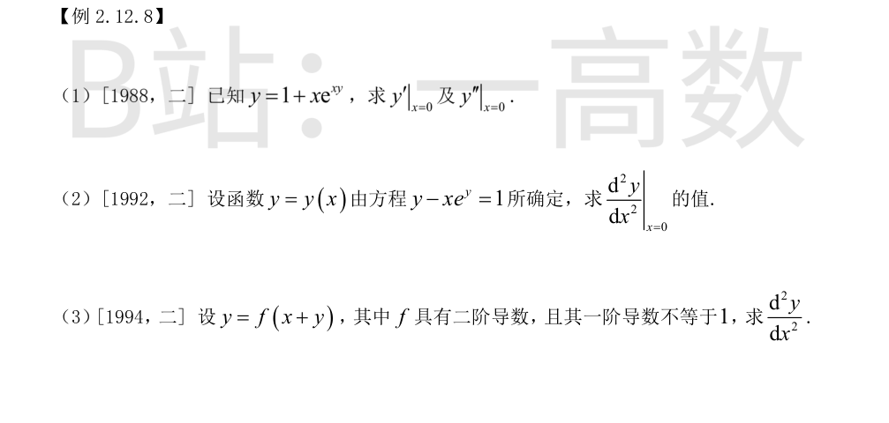
x=0 代入：$y(0)=1$。
两边求导：
$$y'=e^{xy}+xe^{xy}(y+xy')=e^{xy}(1+xy+x^2y')$$
代入 $(0,1)$：$y'(0)=1$。
再求导：
$$y''=e^{xy}(y+xy')(1+xy+x^2y')+e^{xy}(y+3xy'+x^2y'')$$
代入 $x=0,\ y=1,\ y'=1$：
$$y''(0)=e\cdot 1\cdot 1+e\cdot 1=2e.$$
【仲裁修正】独立校验发现分歧，经仲裁重解，以本答案为准：x=0 处 e^{xy}=e^0=1，解题代理误代成 e 致 y''(0)=2e；直接求导或泰勒展开（y=1+x+x²+…）均得 y''(0)=2，A、B 正确
x=0 代入：$y(0)=1$。
两边求导：
$$y'-e^y-xe^y y'=0\ \Rightarrow\ y'(1-xe^y)=e^y$$
代入 $(0,1)$：$y'(0)=e$。
对 $y'(1-xe^y)=e^y$ 再求导：
$$y''(1-xe^y)+y'(-e^y-xe^y y')=e^y y'$$
代入 $x=0,\ y=1,\ y'=e$：
$$y''-e^2=e^2\ \Rightarrow\ y''(0)=2e^2.$$
记 $p=f'(x+y)$。对方程求导：
$$y'=p(1+y')\ \Rightarrow\ y'=\frac{p}{1-p}$$
且 $\frac{dp}{dx}=f''(x+y)(1+y')=\frac{f''(x+y)}{1-p}$。
$$y''=\frac{d}{dx}\left(\frac{p}{1-p}\right)=\frac{p'(1-p)+p\,p'}{(1-p)^2}=\frac{p'}{(1-p)^2}=\frac{f''(x+y)}{[1-f'(x+y)]^3}.$$
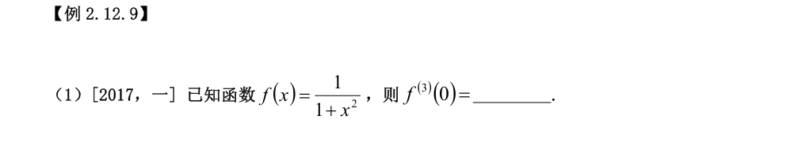
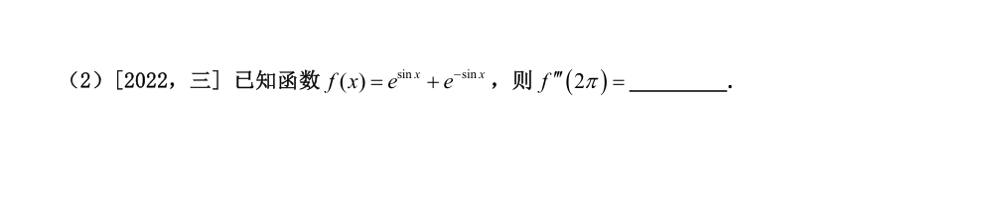
当 $|x|<1$：
$$\frac{1}{1+x^2}=\sum_{k=0}^{\infty}(-1)^k x^{2k}=1-x^2+x^4-\cdots$$
展开式中不含 $x^3$ 项，由泰勒系数唯一性 $\frac{f^{(3)}(0)}{3!}=0$，故
$$f^{(3)}(0)=0.$$
（另法：f 为偶函数，奇数阶导数在 $x=0$ 处必为 0。）
$f(x)=2\cosh(\sin x)$。令 $u=x-2\pi$，则 $\sin x=\sin u=u-\frac{u^3}{6}+O(u^5)$，
$$f=2\left[1+\frac{\sin^2 x}{2}+O(\sin^4 x)\right]=2+\sin^2 x+O(u^4)=2+u^2+O(u^4)$$
泰勒展开中 $u^3$ 项系数为 0，故
$$f'''(2\pi)=3!\cdot 0=0.$$
（直接求导验证：$f'''=(e^{\sin x}-e^{-\sin x})(\cos^3 x-\cos x)-3\sin x\cos x(e^{\sin x}+e^{-\sin x})$，$x=2\pi$ 时 $\sin=0,\ \cos=1$，两项均为 0。）
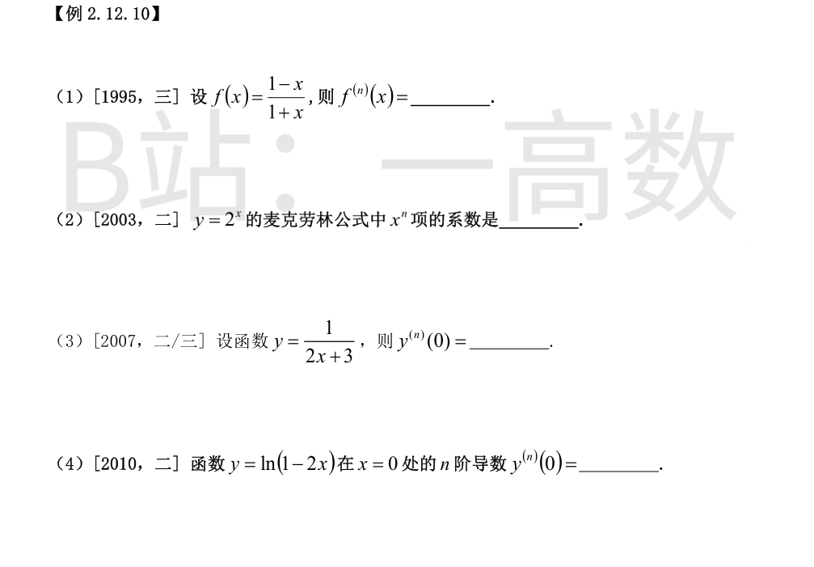
$$f(x)=\frac{1-x}{1+x}=-1+\frac{2}{1+x}$$
由 $\left(\frac{1}{1+x}\right)^{(n)}=\frac{(-1)^n n!}{(1+x)^{n+1}}$ 得
$$f^{(n)}(x)=\frac{2(-1)^n n!}{(1+x)^{n+1}}\quad(n\ge 1).$$
$$2^x=e^{x\ln 2}=\sum_{n=0}^{\infty}\frac{(x\ln 2)^n}{n!}=\sum_{n=0}^{\infty}\frac{(\ln 2)^n}{n!}x^n$$
故 $x^n$ 项系数为 $\frac{(\ln 2)^n}{n!}$。
$$y^{(n)}(x)=(-1)^n n!\cdot 2^n\,(2x+3)^{-(n+1)}$$
（$n=1$：$y'=-\frac{2}{(2x+3)^2}$，验证成立。）
$$y^{(n)}(0)=\frac{(-1)^n 2^n n!}{3^{n+1}}.$$
$$y'=-\frac{2}{1-2x},\qquad y^{(n)}(x)=-\frac{2^n(n-1)!}{(1-2x)^n}\quad(n\ge 1)$$
（$n=2$：$y''=-\frac{4}{(1-2x)^2}$，验证成立。）
$$y^{(n)}(0)=-2^n(n-1)!.$$
【仲裁修正】独立校验发现分歧，经仲裁重解，以本答案为准：y=ln(1-2x) 各阶导数在 x=0 恒为负（-2, -4, -16, …），不含 (-1)^n 交替因子；B 的 (-1)^n 2^n (n-1)! 错误（solver、A 正确）
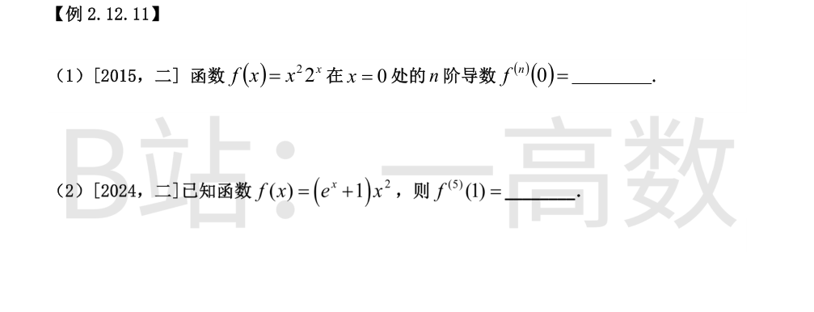
莱布尼茨公式：$f^{(n)}(0)=\sum_{k=0}^{n}\binom{n}{k}[x^2]^{(k)}\big|_{x=0}\cdot[2^x]^{(n-k)}\big|_{x=0}$。
$[x^2]^{(k)}$ 在 0 处仅 $k=2$ 时非零（值为 2）：
$$f^{(n)}(0)=\binom{n}{2}\cdot 2\cdot(2^x)^{(n-2)}\Big|_{x=0}=\frac{n(n-1)}{2}\cdot 2\cdot(\ln 2)^{n-2}=n(n-1)(\ln 2)^{n-2}\quad(n\ge 2)$$
另 $f'(0)=0$，$f(0)=0$。
莱布尼茨公式（$u=x^2$，$v=e^x+1$，$u^{(k)}$ 在 $k\ge 3$ 时为 0）：
$$f^{(5)}(x)=\binom{5}{1}(2x)e^x+\binom{5}{2}\cdot 2\cdot e^x+x^2 e^x=10xe^x+20e^x+x^2e^x$$
$$f^{(5)}(1)=(10+20+1)e=31e.$$
【仲裁修正】独立校验发现分歧，经仲裁重解，以本答案为准：莱布尼茨公式 f^{(5)}=x^2e^x+\binom51(2x)e^x+\binom52\cdot2e^x=x^2e^x+10xe^x+20e^x，x=1 处三项全取 =31e；A 只取第三项得 20e、B 得 30e 均漏项（solver 正确）
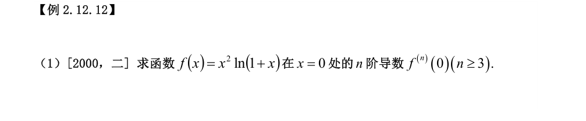
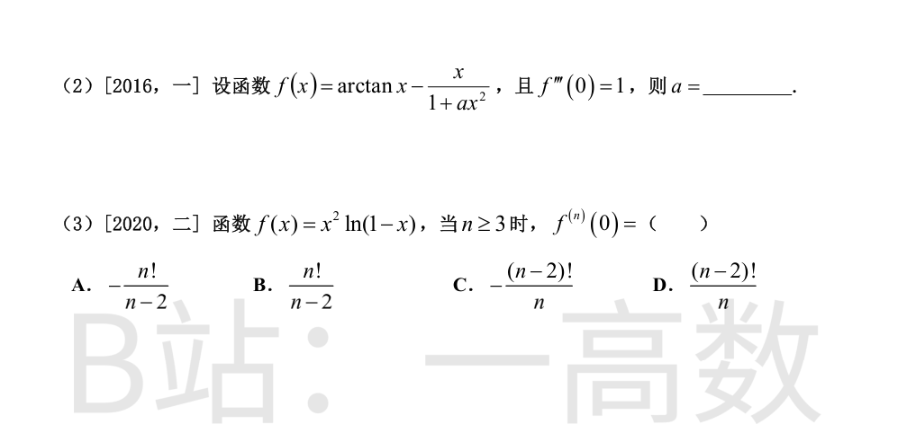
莱布尼茨公式，注意 $[\ln(1+x)]^{(k)}\big|_{x=0}=(-1)^{k-1}(k-1)!$，而 $x^2$ 在 0 处只有二阶导数非零（值为 2）：
$$f^{(n)}(0)=\binom{n}{2}\cdot 2\cdot[\ln(1+x)]^{(n-2)}\Big|_{x=0}=n(n-1)\cdot(-1)^{n-3}(n-3)!=\frac{(-1)^{n-1}n!}{n-2}$$
验证：由 $x^2\ln(1+x)=x^3-\frac{x^4}{2}+\cdots$ 得 $f^{(3)}(0)=3!=6=\frac{(-1)^2 3!}{1}$ ✓，$f^{(4)}(0)=-\frac{4!}{2}=-12$ ✓。
用麦克劳林展开：
$$\arctan x=x-\frac{x^3}{3}+o(x^3),\qquad \frac{x}{1+ax^2}=x(1-ax^2+o(x^2))=x-ax^3+o(x^3)$$
$$f(x)=\left(a-\frac{1}{3}\right)x^3+o(x^3)$$
$$f'''(0)=3!\left(a-\frac{1}{3}\right)=6a-2=1\ \Rightarrow\ a=\frac{1}{2}.$$
由 $\ln(1-x)=-x-\frac{x^2}{2}-\cdots$ 知 $[\ln(1-x)]^{(k)}\big|_{x=0}=-(k-1)!$。
莱布尼茨公式（$x^2$ 在 0 处仅二阶导数非零，值为 2）：
$$f^{(n)}(0)=\binom{n}{2}\cdot 2\cdot\left[-(n-3)!\right]=-n(n-1)(n-3)!=-\frac{n!}{n-2}$$
验证：$n=3$ 时 $f'''(0)=-6=-\frac{3!}{1}$ ✓。选 A。